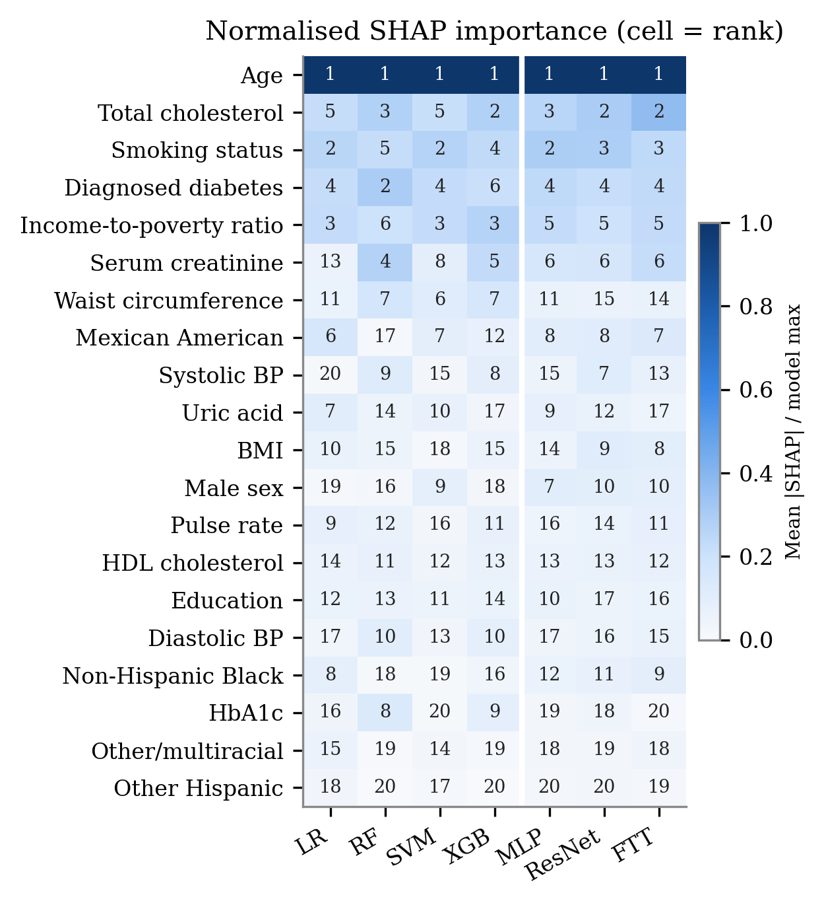
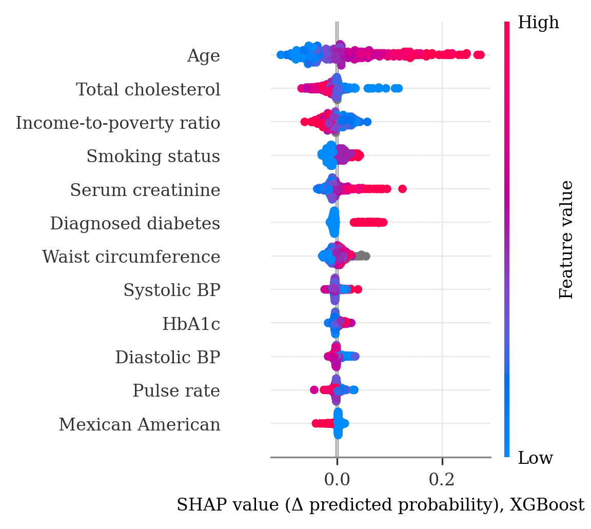
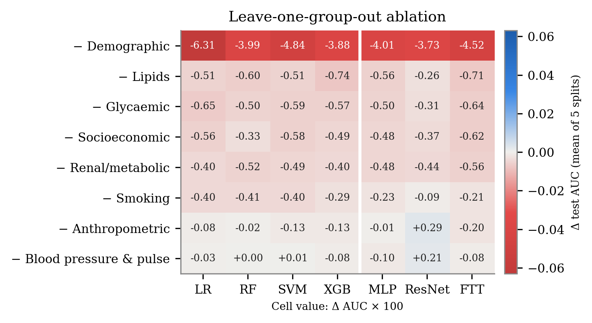

Classical Machine Learning vs. Deep Learning for Cardiovascular Disease Classification on NHANES
Every number on this page comes from the experiment's output files. Section order follows the paper: data, methods, results, discussion. Table and figure numbers match the paper outline.
Key findings
- Four classical models (LR, RF, SVM, XGBoost) were compared with three deep-learning models (MLP, ResNet, FT-Transformer).
- No deep-learning model was significantly better than any classical model.
- XGBoost had the highest AUC. It beat LR, RF, SVM and ResNet significantly, but not the MLP or FT-Transformer.
- The FT-Transformer took 1.6 hours to tune, against 49 seconds for XGBoost, with no accuracy gain.
- All models were well calibrated, and all held up when tested on the newest cycle (2017–2018).
- Age was the most important feature for every model. SHAP rankings follow the shape of the model: the two tree models agree with each other, and the smooth models (LR, SVM and the three deep models) form a second group. The deep models agree almost perfectly with each other (W = 0.92).
- Cholesterol and blood pressure attributions are distorted by treatment after diagnosis. This is a limitation the paper must state (see Discussion).
Data and cohort
NHANES cycles 2011–2012 (G), 2013–2014 (H), 2015–2016 (I) and 2017–2018 (J), downloaded from the CDC. Files used: DEMO, BPX, BMX, MCQ, TCHOL, HDL, GHB, BIOPRO, SMQ, DIQ. Variable names and codes were checked to be identical in all four cycles. The 2019–2020 cycle was left out because COVID-19 interrupted its data collection.
Inclusion: adults aged 20 or older who completed the physical examination and had a known outcome.
Outcome (CVD = 1): answered "yes" to ever being told by a doctor they had congestive heart failure (MCQ160B), coronary heart disease (MCQ160C), angina (MCQ160D), heart attack (MCQ160E) or stroke (MCQ160F). CVD = 0 if "no" to all five. Anyone else was excluded (94 people). Prevalence was 11.0% unweighted and 8.9% survey-weighted.
Cohort flow
{{COHORT}}Table 1. Survey-weighted characteristics by CVD status
{{T1}}Weights: MEC exam weight divided by 4, following NCHS guidance for combining four cycles. Age is top-coded at 80 in NHANES.
Methods
Features (20), by group:
- {{GROUPS}}
Blood pressure is the mean of up to three readings; a diastolic reading of 0 was treated as missing. Medication variables were not used as features because treatment often follows a CVD diagnosis, which would leak the label. The most missing feature was income-to-poverty ratio (9.8%); every other feature was 6.3% or less.
Split: stratified 80/20 (train 17,241 with 1,895 cases; test 4,311 with 474 cases), seed 42. Median imputation and standardisation were fitted inside each model pipeline on training folds only.
Tuning: 5-fold stratified cross-validation on the training set, optimising ROC-AUC. Grid search for LR, RF, SVM, MLP (60 configurations), ResNet (54) and FT-Transformer (8); 40-iteration random search for XGBoost.
Deep models (PyTorch): all three share one training loop: AdamW optimiser, binary cross-entropy loss, batch size 256, early stopping on a 15% validation split (patience 15).
- MLP: Linear → BatchNorm → ReLU → Dropout blocks; 3,649 parameters.
- ResNet (Gorishniy et al., 2021): residual blocks; 68,353 parameters.
- FT-Transformer (Gorishniy et al., 2021): each feature becomes a token, then multi-head self-attention; 69,589 parameters.
All final models and timings used the CPU. FT-Transformer's ablation and bootstrap refits ran on a GPU for speed.
Decision threshold: for each model, the threshold that maximised F1 on out-of-fold training predictions. The test set was never used for any choice.
Metrics: ROC-AUC with 1,000-sample bootstrap 95% CI, PR-AUC, precision, recall, specificity, F1, Brier score, ECE (10 quantile bins), calibration slope and intercept, DeLong test for paired AUC differences, survey-weighted AUC, and timing.
SHAP: the same model-agnostic method for all 7 models (permutation SHAP on predicted probability; 300 test rows, 50 background rows, 164 evaluations per row), so attributions are directly comparable. Checked against exact TreeSHAP for XGBoost: ranking Spearman ρ = {{TREECHK}}.
Stability: across models, pairwise Spearman correlation of mean |SHAP|, top-5 Jaccard overlap and Kendall's W. Within each model, 5 bootstrap resamples of the training set were refit and their SHAP rankings compared.
Ablation: each feature group was removed in turn and the model retrained with its tuned settings. ΔAUC is averaged over 5 different random splits. Temporal validation: trained on 2011–2016 (n = 16,322) and tested on 2017–2018 (n = 5,230).
Selected hyperparameters
{{HP}}Table 2. Test-set performance
{{PERF}}Pairwise DeLong p-values (bold: p < 0.05)
{{DELONG}}n = 4,311, of whom 474 have CVD. Highlighted row: best AUC. DeLong p for XGBoost against the other classical models: LR 0.005, RF < 0.001, SVM 0.002. Precision, recall, specificity and F1 use the out-of-fold max-F1 threshold.

Robustness: repeated splits, temporal and survey-weighted
{{ROBUST}}Across 5 random splits, the differences between models are within about one standard deviation. On the 2017–2018 temporal test set, all 7 models converge to an AUC of 0.837–0.840 and XGBoost's small advantage disappears.
Computational efficiency
{{EFF}}Wall-clock times on a 12-core CPU; tuning ran in parallel. The FT-Transformer took 119 times longer to tune than XGBoost and about 5,000 times longer than LR to fit, with no significant gain in accuracy. The SVM was the slowest to explain.
SHAP feature importance and stability


Table 3. Cross-model and within-model agreement of SHAP rankings
{{STAB}}- Kendall's W across all 7 models is {{W}}, meaning broad agreement. It is 0.92 among the 3 deep models and 0.74 among the 4 classical models.
- Agreement follows the shape of the model. RF and XGB (tree ensembles) correlate at 0.94. ResNet and FT-Transformer correlate at 0.94, and SVM and MLP at 0.89. Tree vs smooth pairs are the lowest (LR–RF 0.47).
- LR, SVM and all three deep models share the same top 5: age, smoking, total cholesterol, diagnosed diabetes and income-to-poverty ratio. RF and XGB bring serum creatinine into their top 5.
- Tree models give their full rankings the most stability across bootstrap refits (ρ 0.97 and 0.92). FT-Transformer is the least stable (top-5 overlap 0.61).
Table 4. Leave-one-group-out ablation

ΔAUC, mean ± SD over 5 splits. Negative values mean the model got worse without that group.
Discussion points
- Deep learning gave no measurable advantage. This matches earlier findings that gradient-boosted trees match or beat neural networks on tabular data.
- Simple models are competitive. LR came within 0.009 AUC of the best model, was well calibrated, and was the cheapest to train.
- Similar accuracy does not mean similar explanations. Tree models and smooth models spread credit differently across correlated features. SHAP from a single model gives an incomplete picture.
- Attributions are associations, not causes.
Limitation the paper must state: treatment after diagnosis
In every model, higher total cholesterol lowers predicted CVD probability, and blood pressure adds almost nothing. People already diagnosed with CVD are usually treated:
{{MED}}The outcome is existing, self-reported CVD measured at a single point in time. So the models partly learn the signs of having been diagnosed and treated, not the risk of developing CVD. Medication was checked only for this analysis and was never a model feature (script 06_medication_check.py).
Other limitations: the outcome is self-reported (recall bias) and prevalent rather than incident. Age is top-coded at 80. Survey weights were used for descriptive statistics and a weighted-AUC check, not for model training. Permutation SHAP is approximate, though it was validated against exact TreeSHAP. Some selected deep-learning settings sit at the edge of their search grids, but the top configurations score within 0.003 AUC of each other, below the cross-validation noise.
Results-based abstract
This replaces the "proposed study" abstract. All numbers are filled in from the results.
Keywords: Cardiovascular disease, classical machine learning, deep learning, NHANES, explainable artificial intelligence, SHAP.
Files
The zip NHANES_CVD_results_for_paper.zip holds the 300-dpi PNG and vector PDF figures, every table as CSV and Markdown, the raw result files, the processed dataset, and the code (scripts 01 to 06 rerun the whole experiment).